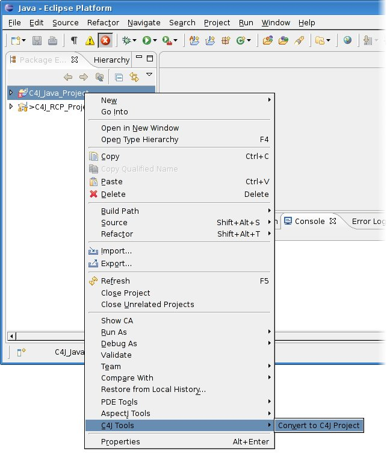
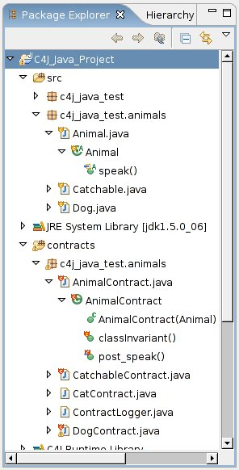

|
Easy enabling or disabling of C4J for
Java projects |
Enabling or disabling C4J for a specific Java project can be
done with only one click.

This will automatically add the needed dependencies to your
project and prepare it for more usability enhancements. |
|
Decoration of contracts, targets and their
methods |

You can choose to decorate your contracts and targets (contracted
classes) and their methods such that you can easily spot them.
Additionally, the decoration of methods gives you a hint if they are
guarded by pre and/or post conditions, if they belong to a target class, or
if they represent pre or post conditions in contracts.
|
|
Markers for class invariants and methods |
The Java Editor can now display markers for class invariants and
contracted methods along with a message telling you, which contract(s)
guard the specific method.
|
|
Automatic change of the VM arguments of your
launch configurations |
In the Window > Preferences dialog, you can control the C4J part of the
VM arguments of your launch configurations. Checking "Enable" for a special
launch configuration type will automatically change the VM arguments of any
launch configuration of this type, when it is first run. You can also add
or remove the C4J specific VM arguments for a particular launch configuration
by checking or unchecking the "Enable" box.
|
|
Refreshing information about targets and their
contracts |
The "C4J Tools" submenu in the context menu of your C4J enabled project
allows you to completely refresh the information about your targets and
contracts via the "Refresh Contract Model" entry. This may be useful when
your sources have been changed outside of Eclipse.
|